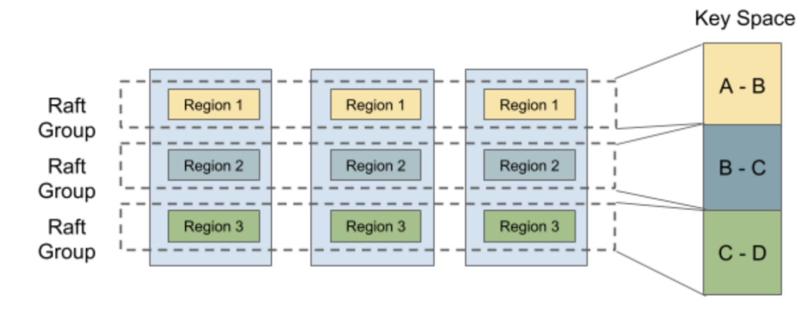

本 Project 需要我们实现基础 Raft 算法。
思路
Part A Raft
需要实现的代码在整个 raft 文件夹下。
这一 part 我们要实现三个模块，分别为
- Leader election => 领导选举
- Log replication => 日志复制
- Raw node interface => 上层接口
有了之前 MIT6.824 的经验，做这部分其实没啥压力，最大的困难点在于熟悉整个代码框架。
跟 6.824 不同之处在于，TinyKV 的 Raft 模块进行同步采用的消息队列的形式，由上层定时收取然后传输给其他存储节点的 Peer，上层收到消息后 push 到下层驱动 Raft 模块接收信息。
1 Leader Election
领导选举的基本流程如下：
对于发起者：
- 上层调用
Tick()； - Raft 层检查是否满足发起选举条件，即
electionElapsed >= electionTimeout且不是 Leader； - 若超时，则视为收到收到一条本地
MsgHup消息，对该消息的处理就是正式进入开始选举事件，即1
2
3
4
5
6
7
8func (r *Raft) Step(m pb.Message) error {
switch m.MsgType {
...
case pb.MessageType_MsgHup:
// 开始选举
...
}
} - 如果不是 Leader（防止恶趣味测试给 Leader 发一条
MsgHup），则成为候选人
Candidate（进入下一任期，投自己一票），并向其他 Peer （如果有）发送MsgRequestVote。请求中除了自身CurrentTerm，还需包含自己最后一个日志条目的LogTerm与LogIndex； > 存在只有自己一个 Peer 的情况，那就直接成为 Leader 不用发请求了； - 对于收到的每一张票，首先检查发送方的
Term，判断是需要切换到Follower并更新任期。然后检查是同意还是拒绝，如果同意票过半则成为 Leader，如果反对票过半则退至Follower，等待其他 Leader 发来消息或者下一次开始选举。 >
对于接收者：
- 上层调用
Step()； - 检查发送方的
Term，判断是需要切换到Follower并更新任期，还是返回一个拒绝； - 检查当前任期是否给发送方投过票，如果投给别人了那也拒绝，讲究一个先来后到；
- 检查发送方最后一个日志条目的信息是否比自己更旧，如果是就拒绝，他不配当 Leader；
- 返回一个同意票，并修改自身投票记录；
需要注意的是，electionTimeout
应返回一个随机数，防止出现多个 Peer
不断同时发起选举的死局。这里我用一个函数代替，随机返回 1~3
倍的给定超时值。
1 | func (r *Raft) getElectionTimeout() int { |
由于这里完全采用了同步的方案，故不需要用到 Goroutine 与并发相关代码。
2 Log replication
MsgAppend：
选举成功成为 Leader
后，需要立刻在自己的日志中增添一条空的日志条目，以巩固领导者地位。一旦有任何日志被添加（成为
Leader 或收到 MsgPropose 消息），都会触发 Raft
的日志复制机制——向所有 Peer 发送 MsgAppend。
关于日志复制其实论文里讲的很清楚了。Raft 层维护所有 Peer
的两个变量：Match 和
Next。前者表示目前能够确定的其他 Peer
与自身一致的最后一个日志条目 Index，后者表示下一次
MsgAppend 要从哪个日志开始发。
这两个字段都会在新建 Raft 节点时初始化为 0 和 LastLogIndex+1。
MsgAppend需要包含PrevLogTerm与PrevLogIndex以便接收方进行日志匹配。
同时，消息还要附带一个 Commit 字段，让其他 Peer
知道哪些日志是已经被大多数复制的，并更新自己的
Committed，以便 Apply 到上层。
接收方收到 MsgAppend 并检查完发送方 Term
后，便开始进行匹配，如果PrevLogTerm 与
PrevLogIndex 不匹配，则拒绝该条消息。
反之遍历
Entries，直到第一条不匹配的为止，后续的都删掉，然后将新来的条目加到自己的日志中，即
1 | if len(m.Entries) > 0 { |
最后，根据消息中的 Commit
字段更新结构体字段，并发送同意回复，包含自身最后一条日志的
Index，让 Leader 更新 Match/Next 字段。
如果消息中的
Entries长度为 0，则至少可以确定 Leader 含有相同的日志{Term: PrevLogTerm, Index: PrevLogIndex}，那么论文中提到的 "index of last new entry" 就是PrevLogIndex了。
要注意，如果不同意该条 MsgAppend，则无需更新
electionElapsed，因为该 Leader
可能刚从分区的网络中放出来，马上要下台了。反之要重置一下自身选举相关的状态。
发送方收到 MsgAppendResponse 后，看看是不是要切到
Follower，然后看看是否为同意，是则更新
Match = response.Index, Next = Match + 1，然后根据所有 Peer
的 Match 更新自身的 Commit；反之令
Next--，重新发 MsgAppend。
Heartbeat：
与 6.824 不同，TinyKV
将日志复制和心跳分开，算两种不同的消息。前者上文已经提过，后者则是在
Tick() 驱动至心跳超时或收到 MsgBeat 消息后，向所有 Peer
发送 MsgHeartbeat。心跳的作用不仅仅是巩固 Leader
地位，还要向 Peers 广播自己的 Commit，接收方如果发现
Commit 比自己最后一个日志的 LastLogIndex
还大，则需要告诉发送方该消息，表明自己落后了，并拒绝该条消息；反之更新自身的
Commit。
发送方检查回复，如果 Peer 落后了，立刻发一条 MsgAppend
过去让它赶紧进入到最新的状态。
3 Implement the raw node interface
RawNode 包裹了 Raft 层，其作用就是定期检查 Raft
的状态（日志、消息队列等）是否有更新，如果有则发送给上层进行处理，同时获取处理结果进行状态更新。
主要是实现 raft/rawnode.go 中的
Ready()，HasReady()，Advance()
三个函数。
首先要明确的一点是，一个 Raft 日志会长成以下这个样子：
RaftLog manage the log entries, its struct look like:
snapshot/first.....applied....committed....stabled.....last
-------------|-------------------------------------------|
分别代表了快照截断、已被上层应用、Raft 层多数持有、已被持久化、最后一个日志的 Index。
因为存在快照截断点，故
Index到切片下标需进行转换。这里我顺着 6.824 的习惯将entries[0]设置为截断点，于是有
idx = Index2idx(Index) = Index - entries[0].Index。于是可以实现
raft/log.go中RaftLog的相关函数。实际上就是根据那些 point 返回对应范围的切片。 -allEntries() => entries[1:]-unstableEntries() => entries[Index2idx(stabled):]-nextEnts() => entries[Index2idx(applied):Index2idx(committed)]
Ready() 函数是获取 Raft
层的（自上次调用以来）所有发生变化的字段。其中
Ready.Entries
字段表示未被持久化的日志条目，Ready.CommittedEntries
表示已被 Commit 但未被 Apply 的日志条目，Ready.Snapshot
表示未被上层应用的快照。
由于 SoftState 和 HardState
这两个字段无法直接看出变化，故要在 RawNode 中加上
PrevSoftState 与 PrevHardState 两个变量，通过
isxxxEqual() 判断是否有更新。
注意：如果消息队列为空，则
Ready.Messages 应为 nil 而不是长度为 0 的切片。
HasReady() 函数用于判断是否存在
Ready，即所需状态是否可以被收集——SoftState/HardState
是否有变、是否有 unstableEntries/nextEnts、是否有等待应用的
snapshot、以及消息队列是否为空。
一旦下层状态发生变化，就需要马上收集并持久化。
Advance() 函数会在上层处理完 Ready
并持久化后调用（其实就是之前调用 Ready()
获取到的那个），旨在通知 Raft 层推进相关状态，比如 RaftLog
的 stabled、applied 这些。
也很好理解，之前收集到的
Entries就是 unstabled 的，现在处理完了那就有stabled = Entries.LastLogIndex了。其他也同理。
Part B FT KV server
需要实现的代码在 kv/raftstore 文件夹下。
这一 part 我们要实现两个模块，分别为
- peer storage => 实现持久化
- Raft ready process => 实现客户端请求与答复
首先要明确的是，整个系统划分为若干逻辑上的 Cluster，每个 Cluster 又包含了若干物理 Storage 节点，分布在不同物理位置。节点内部的物理存储空间又划分为不同 Region，每个 Region 表示某一段连续的 Key。不同 Storage 节点上相同的 Region 由同个 RaftGroup 管理，这部分抽象为 RaftStore，应用同一套 Raft 和日志机制。下图就是一个典型的 Cluster：

1 Implement peer storage
PeerStorage 主要负责记录存储状态并执行持久化。TinyKV
使用两个 badger 来存放不同状态：raftDB 存日志条目和 Raft 层信息，kvDB
存状态机数据。
我感觉这部分还是有点混乱的，还是得多看看文档>_<
Key KeyFormat Value DB raft_log_key 0x01 0x02 region_id 0x01 log_idx Entry raft raft_state_key 0x01 0x02 region_id 0x02 RaftLocalState raft apply_state_key 0x01 0x02 region_id 0x03 RaftApplyState kv region_state_key 0x01 0x03 region_id 0x01 RegionLocalState kv
这个模块只需要实现一个函数，即
SaveReadyState()——将上层从 RawNode 那收到的
Ready 进行持久化。主要流程为：
- 根据
Ready修改内存数据raftState/applyState； - 利用
WriteBatch.SetMeta()以及meta.xxxKey()往 wb 中加入批处理日志，设置好对应的 Key/Value 条目； - 最后调用
WriteBatch.WriteToDB()写到 badger 中（持久化）；
如果数据没更新就不必写到 badger 中了。所以到这为止都要有一个“数据是否更新”的判断。
2 Implement Raft ready process
现在我们终于要实现上层怎么处理 Client 发来的请求，以及驱动下层获取 Ready 并持久化了。
RaftStore 在启动时会新建一个含有消息管道
CloseCh的RaftWorker，然后创建一个 GoRoutine 不断从CloseCh中获取 Client 发来的消息。每收到一条消息，都会新建一个PeerMsgHandler处理该信息。handler 拥有相关的Peer以及上下文.
整套流程应该是这样的：
- Client 发一个包含 Request 的 Message 过来；
RaftWorker调用PeerMsgHandler.HandleMsg()处理 Message，即检查其消息类型，然后调用相关的处理函数；- 目前语境下，消息类型为
MsgRaftCmd，那么会调用PeerMsgHandler.proposeRaftCommand()驱动下层（如果是 Leader） Propose 一条包含该命令的日志 L。与此同时，消息中还带有一个可以让我们发回复的管道，如果不是 Leader，就发个ErrNotLeader回去。反之，由于要等到很久以后应用日志才能回复，故需记录 L 的Index/Term在PeerMsgHandler.Proposals中以便后续应用 L 时回复； - 随后调用
PeerMsgHandler.HandleRaftReady()收集新增的日志以及要向 Peers 发送MsgAppend消息； - Peers 收到消息后也会发一个
MsgAppendResponse回来； - 等待同个 RaftGroup 的大多数都持有该日志后，下次
PeerMsgHandler.HandleRaftReady()的调用就会收集已提交但未应用的日志，并将命令应用到 badger 中； - 然后如果是 Leader，还要发个回复给当前日志对应的
Proposal，系统会收取 Response 发给 Client； - 日志应用完毕后通知
PeerStorage进行相关数据的持久化，以及RawNode推进状态；
任务书给的伪代码是在应用日志前持久化，但我觉得应用日志完 applied 会发生变化，后面照样还要落盘，就干脆把持久化放在最后了。
要注意的是，在应用日志时似乎不能把
WriteToDB()放在最后，防止出现 Read After Write 但由于未写入出现 Stale Read 的情况。我这里就这样设置了：
2
3
4
5
kvWB := new(engine_util.WriteBatch)
d.applyCommittedEntry(&entry, kvWB)
kvWB.MustWriteToDB(d.ctx.engine.Kv)
}发送回复时，遍历 Proposals 发现
Index相同但Term不同，则发个ErrStaleCommand。
Part C Snapshot
需要对前两个 Part 所涉及的文件进行修改。
这一 part 我们要实现快照。snapshot 有两条路线能走，上层主动截断并向下通知，或是被动接受 Peers 传来的 snapshot 并在 Ready 中告知上层。
在有快照的情况下，我们需要修改以下数据：
- 删除 badger 中的遗留日志；
- 修改 PeerStorage 中的 applyState 并持久化；
- 修改 RaftLog 的相关数据；
1 主动快照
系统定时 Tick，向 handler 发送 MsgTypeTick 消息，触发
PeerMsgHandler.OnTick() =>
PeerMsgHandler.onRaftGCLogTick()，检查已应用日志大小是否超过
RaftLogGcCountLimit，如果超过了，就生成一条类型为
CompactLog 的 adminRequest 并向下 propose。
等到该日志被 Ready 捕获时，上层就知道可以安全截断日志了，即调用
PeerMsgHandler.ScheduleCompactLog() 删除冗余日志。由于
PeerStorage 没法通过 Ready 修改 applyState
中的 TruncatedState，那就在 apply 里头改了。
1 | func (d *peerMsgHandler) applyAdminRequest(adminReq *AdminRequest, entry *Entry, wb *WriteBatch) { |
这样一来，后续对 RawNode 的 Advance
就需要加上一点修改。如果 Ready.CommittedEntries
非空，说明存在应用了 CompactLog 的可能，需要调用
RaftLog 中预先为我们声明好的 maybeCompact()
函数。接下来需要做的就是实现它。由于先前已经修改了
PeerStorage，那么可以直接通过 Storage 的接口
FirstIndex()
来获取日志截断点，从而进一步判断是否需要对日志进行压缩。
到此，所有需要修改的数据均已修改完毕。
2 被动快照
Leader 一定是最先主动快照的那个，之后在需要发送
MsgAppend 的时候会检查 Peer 的 Next 字段。有些
Peer 可能由于网络断开或宕机重启等原因，没有对之前的
MsgAppend 进行回复去更新 Next，或没收到之前的
CompactLog 日志，这样就导致后续 Leader 对日志截断后，这些
Peer 的 Next 甚至比截断点 truncatedIndex
还小，那么此时 Leader 就需要发 MsgSnapshot 给他们了。
发送该消息的话，需要把本地数据库的快照数据也一并发过去，这样 Peer
才能尽快赶上进度。通过调用 Storage.Snapshot()
可以产生快照数据，但了解了 PeerStorage
的该函数执行流程后发现，首次调用只会发条消息给
Worker，叫他去干活，把数据处理好后通过管道发回来，在后续的调用才会拿到这部分数据，于是有
1 | newSnapshot, err := r.RaftLog.storage.Snapshot() |
通过 HandleRaftReady 收集消息队列并发送，Peer 收到了
MsgSnapshot，触发
Raft.handleSnapshot()，还是一样的先判断发送方的
Term，接着如果发送方的截断点
truncatedIndex < CommittedIndex，是没有应用这个快照的必要的，因为之前的日志会不断被
apply，那么 CompactLog 必然会被上层捕获从而主动截断。
这里还需要发一个
MsgAppendResponse回去，以便 Leader 收到拒绝后修改Next字段。最后才修改 Raft 层与 RaftLog 的相关数据，并令
RaftLog.pendingSnapshot = msg.snapshot（可以认为该数据一定不是 nil），这样下次收集 Ready 的时候会拿到待应用的快照数据，在SaveReadyState中调用PeerStorage.ApplySnapshot()将快照落实到 badger 中并修改ApplyState。
到此，所有需要修改的数据均已修改完毕。
一些坑
newRaft时传入的peers切片只在 2A 的测试中用到，实际上 peers 信息是通过Storage.InitialState()返回的confState.Nodes给出；